Jual Genteng Metal di Surakarta ☎ 0822 4582 0777 (Rinanti)
Salah satu komponen terpenting dari sebuah bangunan baik itu kecil, sedang, besar maupun megah sekalipun pasti memerlukan atap. Karena tanpa atap maka sebuah bangunan tidak dapat disebut bangunan dan hanya dapat disebut sebagai bangunan terbengkalai. Salah satunya adalah atap galvalum, atap lengkung maupun genteng metal. Adapula atap galvalum yang berbentuk unik yaitu atap lengkung galvalum. Maka simaklah artikel yang akan saya ulas berikut ini.
Distributor & Supplier Genteng Metal

Genteng metal banyak dipilih karena memang lebih tahan lama, anti bocor, tidak berjamur, kesan yang diberikan pada atap rumah menjadi elegan dan indah selain itu juga karena harga yang lebih ekonomis. Kami memiliki stock genteng multiroof, rainbow dan sakura roof terlengkap. Selain itu genteng metal Surakarta dinilai lebih anti bocor. Memang saran terbaik ketika anda ingin menggunakan atap dari genteng metal Surakarta adalah gunakan jenis genteng metal Surakarta pasir terbaik. Anda cukup menghubungi contact person yang sudah tertera di setiap industri yang anda butuhkan. Jika anda masih agu lagi, kami sarankan untuk anda untuk mengubungi kami secara langsung.
kami berusaha mencari kepuasan pelanggan kami.
Info Pemesanan Selengkapnya
Google Maps: https://www.google.com/maps/d/u/0/viewer?mid=18K_Vf8GKnjN9AtE2jUMATDSYvScojDst&ll=-7.269373870070218%2C112.655575&z=16
Note: https://www.facebook.com/notes/distributor-of-industrial-supply/pabrik-supplier-genteng-metal/1783191985314014/
Event: https://www.facebook.com/events/1480458558737554/
Portfolio Produk: https://www.facebook.com/pg/DistributorOfIndustrialSupplyDIS/photos/?tab=album&album_id=1683750531924827
Distributor & Supplier Besi Beton
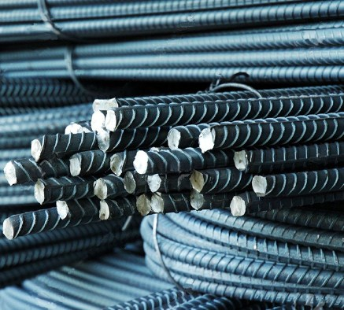
Besi beton adalah besi yang digunakan untuk penulangan konstruksi beton atau biasa dikenal sebagai fungsi badan bertulang. Berikut fungsi dan kelebihan dari besi beton yaitu memiliki tekanan yang kuat dan lebih tinggi dibandingkan dengan bahan lainnya, tahan terhadap api dan air dan juga memiliki struktur terbaik pada bangunan jika banyak bersentuhan dengan air, memiliki struktur yang cukup kokoh, tidak memerlukan biaya pemeliharaan yang cukup tinggi, dapat dirakit dalam bentuk yang sangat beragam dan masih banyak lagi kelebihan yang bisa anda dapatkan dengan menggunakan Besi beton.
Segera kunjungi dis.or.id untuk mendapatkan besi beton yang anda inginkan. Anda bisa mendapatkan besi beton dengan harga yang sangat murah dan terjangkau. Jadi, anda tidak perlu ragu lagi.
Distributor & Supplier Steel Grating
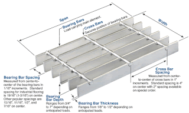
Plat Grating merupakan suatu jenis plat besi yang terbuat dari rangkaian semisal sekrup besi dan plat jalur. Cara menghubungkan bagian-bagian tersebut adalah dengan menggunakan pengelasan atau penguncian. Sehingga ketika Anda akan mencari Plat Grating bisa melakukan order pada toko bangunan penyedia barang ini. Tetapi, jangan hanya memperhatikan harga karena Anda harus mempertimbangkan kualitasnya terlebih dahulu. Plat Grating dapat Anda temui dimana saja.
Kini anda bisa mendapatkan steel grating dengan harga yang sangat murah namun tetap memiliki kualitas dan mutu yang terbaik dengan mengunjungi dis.or.id.
Distributor & Supplier Pipa (Hitam/Gas, Galvanis)
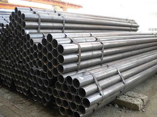
Manfaat dari pipa hitam galvanis memang banyak sekali untuk kebutuhan konstruksi bangunan. Pipa hitam banyak digunakan untuk kebutuhan konstruksi bangunan karena ia kokoh dan tahan karat karena sudah terlapisi dengan lapisan stainless steel. Sifatnya yang tahan karat menjadikan pipa ini dapat diaplikasikan disegala perubahan cuaca Indonesia. Ukuran pipa hitam yang terjual adalah ½ inc sampai 40 inc. Hubungi saja kontak kami untuk melakukan konsultasi mengenai kebutuhan pipa hitam gas galvanis bagi proyek industri anda.
Distributor & Supplier Kawat Bronjong/Gabion

Kawat bronjong kini dapat sering ditemui untuk berbagai kebutuhan pembanguna. Namun, ada juga kawat bronjong PVC yang dilapisi dengan plastik. Maka dari itu, kekuatannya untuk menahan tebing tinggi yang mungkin bisa longsor tidak perlu dipertanyakan lagi. Tujuannya agar bebatuan tidak hancur karena terkena ombak terus menerus. Kawat bronjong ini juga bisa berfungsi sebagai pengaut tebing miring di mana di atas tebing tersebut mungkin terdapat bangunan atau jalan.
Untuk itu, kini kawat bronjong sangat banyak dibutuhkan pada segal bidang. Disana anda bisa mendapatka kawat dengan harga yang cukup terjangkau dengan kualitas terbaik yang dimilikinya. Tak hanya itu, kawat bronjong yang disediakn juga terdapat bermacam ukuran.
Distributor & Supplier WF H-beam
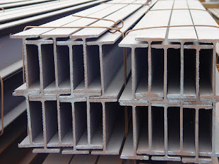
Saat ini, banyak orang yang ingin mencari jenis besi WF, terlebih ini zaman yang serba modern dan praktis. Besi ini dijual dengan harga yang cukup murah dan terjangkau sehingga tidak terlalu mahal. Kekuatan dari besi ini sangat besar dan padat serta kuat dengan daya tekan dan tarik yang tinggi. Di samping itu, besi ini juga mempunyai sisi padat yang bagus.
Jika membawanya Anda juga tidak perlu khawatir keberatan karena besi ini lebih ringan dan praktis. Pembawaan bebannya pun juga sangat mudah dan terjamin.
Kini anda bisa mendapatkan besi WF dengan kualitas terbaik dan mutu terjamin. Harga yang di patok juga sangat terjangakau, jadi anda tidak perlu mengeluarkan budget terlalu banyak. Pastinya dengan harga yang sangat terjangkau.
Distributor & Supplier Expanded Metal
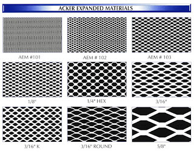
Expanded metal atau yang dikenal juga dengan grid mesh ini adalah lembaran baja berbentuk jala dengan lubang-lubang yang homogen dan sangat cocok jika digunakan untuk berbagai aplikasi selain dari Pagar BRC. Umumnya penggunaan dari Expended Metal ini adalah untuk walkway atau catwalk, anak tangga pada tower serta banyak juga digunakan di dermaga/konstruksi lepas pantai/pertambangan. Beberapa keunggulan yang ditawarkan oleh expanded metal seperti ini adalah dikenal memiliki bentuk yang indah serta homogen, relatif lebih ringan, lebih vareatif dalam hal pengaplikasiannya, dan mudah sekali dipasang.
Kini anda bisa membeli expanded metal yang anda inginkan dengan mengunjungi dis.or.id. Disana anda bisa menemukan dan memesan langsung expanded metal yang anda butuhkan.
Distributor & Supplier Plat (Hitam, Kapal, Bordes, Strip)
.JPG)
Harga plat besi bordes, strip dan plat besi lainnya sangat terjangkau per meter persegi. Plat besi memang ada yang tipis dan tebal, perihal ukuran ini akan kita sampaikan secara detail pada topik yang berbeda.
Oleh Karena itu dis.or.id dapat menjual plat besi yang murah dengan kualitas yang bagus. Segera hubungi nomor dis.or.id dan segera order karena dis.or.id adalah agen resmi yang langsung mengambil plat hitam ini dari pabriknya.
Distributor & Supplier Floor Deck (Bondex)
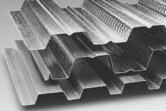
Floor deck atau bondek merupakan material pengganti material konvensional yang berbentuk seperti papan lebar atau triplek. Memasang Floordeck berarti memasang bekesting tetap pada areal yang luas dalam waktu singkat dan menghemat pemakaian perancah tiang penyangga. Menggunakan Floor Deck bisa mengurangi pemakaian perancah serta tiang-tiang penyangga sehingga akan lebih menghemat biaya. Pemakaian dari floor deck juga bisa membuat proses pengerjaan dan pembuatan dak menjadi lebih mudah, cepat dan efisien. Maka dari itu tidak mengherankan jika saat ini banyak yang lebih memilih menggunakan Floor Deck ini.
Anda juga bisa langsung memesannya ataupun hanya ingin mengetahui detail harga yang di patok dari floor deck tersesbut. Pastinya dengan harga yang sangat terjangkau dan dengan mutu terbaik.
Distributor & Supplier Atap Galvalum
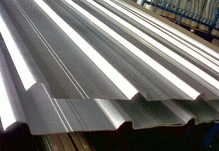
Dengan semakin panasnya bumi, maka di ruangan pun masih terasa suhu panas. Atap galvalum umumnya dijual dengan sistem per lembar.
Ada yang menjual per m2 tapi ada pula yang menjual dengan sistem lembaran. Saat proses pemasangan rangka pada bagian atap.
Besar kecilnya galvalum tergantung pada kebutuhan anda. Bila bebannya berat maka anda harus memakai galvalum dengan ukuran yang lebih besar. Bila anda mencari atap galvalum dengan berbagai ukuran, maka anda datang ke tempat yang tepat. Jenisnya yang beragam dan banyak ukuran yang dapat disesuaikan mampu memenuhi kebutuhan anda.
Distributor & Supplier Atap Lengkung
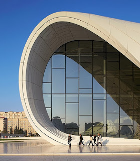
Dewasa ini, atap lengkung sangat dibutuhkan bagi berbagai macam jenis bangunan. Baik atap tersebut terbuat dari besi, aluminium, galvalum, zincalum kayu dsb. Atap haruslah mempunyai sifat kedap air sehingga air hujan tidak akan merembes kedalam bangunan tersebut.
Bila atap sudah bocor maka kualitas dari atap tersebut akan diragukan. Salah satu jenis atap galvalum yang sekarang sedang populer adalah atap lengkung.
Karena apabila atap tersebut sudah tertembus oleh air. Salah satunya adalah pada stadion bola maupun kolam renang. Apabila anda sedang mencari atap lengkung dari galvalum yang satu ini. Yaitu, lengkungannya yang sangat tidak biasa jika dibandingkan dengan atap galvalum yang lain. dis.or.id adalah distributor terpercaya untuk anda. Maka anda sudah berada di tempat yang tepat. Kunjungi dis.or.id dan kami akan siap membantu kebutuhan anda.
Distributor & Supplier Truss Canal C
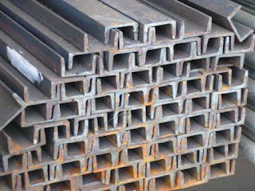
Anda pasti mengetahui bahwa truss atau besi kanal c ini tahan terhadap rayap. Jadi, galvalum adalah salah satu jenis baja terbaik dimana memiliki cirikas ringan dan tipis namun memiliki daya tahan, dan kekuatan yang sangat baik bahkan di klaim lebih baik bila kita bandingkan dengan baja konvesional. Dengan penggabungan galvalum dengan besi kanal c maka sebuah bangunan bisa menjadi lebih kuat dan berkualitas. Sehingga gabungan keduanya menghasilkan kualitas yang bila ditandingkan dengan bahan gabungan lain maka tidak akan kalah berkualitasnya. Jadi fungsi nya sebagai reng atau penyangga genteng. Jadi dengan kata lain, besi kanal C ini bisa dikatakan multi fungsi. Maka janganlah ragu dengan pilihan anda. Segala sesuatu juka diukur sesuai dengan ilmunya maka akan menghasilkan karya yang bangus serta hemat biaya.
Distributor & Supplier Hollow Galvalum
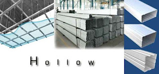
Hollow Galvalum adalah bahan material bangunan yang terbuat dari logam dan bersifat anti karat. Sebenarnya ada banyak unsur yang dilibatkan dalam pembuatan hollow galvalum ini, yaitu alumunium, baja, beserta zinc.
Bila anda ingin membeli Hollow galvalum dengan harga terjangkau dan tentunya kualitas terjamin, simak ulasan kami ini. Untuk anda yang sedang membutuhkan hollow galvalum dalam jumlah kecil ataupun partai besar, dan sedang mencari hollow galvalum berkualitas harga murah. Jika anda berencana membangun sebuah plafon, saran saya pilihlah ukuran yang saya sebutkan diatas. Studi penelitian telah mengungkapkan bahwa kerangkan plafon menggunakan jenis hollow ini bisa bertahan puluhan tahun. Mengapa kami bisa menjual lebih murah? Karena kami adalah distributor resmi dari pabrik, sehingga anda akan mendapatkan harga pabrik langsung dari kami. Tertarik untuk membeli? Hubungi kami sekarang juga, karena kami memiliki penawaran menarik untuk anda.
Distributor & Supplier Seng Gelombang

Seng gelombang memiliki banyak keunggulan dari berbagai sisi. Baik itu bangunan besar dan kecil, tanpa atap yang berkualitas maka bangunan tersebut rentan kebocoran. Andapun wajib memperhatikan bagaimana atap bagian bangunan tersebut apakah berkualitas ataukah tidak, atap dengan kualitas rendah akan beresiko kerusakan maupun kebocoran yang pasti merugikan seisi bangunan ruangan tersebut. Ia lebih mudah di pasang dan harga jual yang ekonomis dipasaran membuat seng gelombang memiliki banyak peminat. Walaupun begitu, harga jual seng gelombang warna masih ekonomis dan pas dikantung untuk anda yang ingin menghemat pengeluaran pembangunan.
Tetapi, janganlah ragu dengan hal demikian. Jika anda membutuhkan seng gelombang kecil ini sekarang juga, maka segera hubungi kami di dis.or.id untuk kepentingan lebih lanjut. Salah satu distributor yang terkenal akan kualitas dan jaminannya adalah dis.or.id anda dapat mengunjungi situs tersebut dan menjelajahinya.
Distributor & Supplier Plat Seng
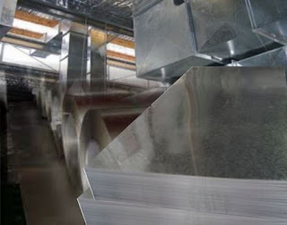
Seng atau Plat gavalum dapat dikatakan pembaruan dari seng biasa pada umumnya, karena jenis seng ini tidak panas, tidak bising, anti karat, tahan lama dan masih banyak kelebihan lainnya.
Plat seng dan plat galvalum banyak digunakan untuk berbagai kebutuhan, dari kebutuhan pembangunan rumah, industri, pabrik dan berbagai kegunaan lainnya. Berbicara tentang plat seng maka tentu tidak lepas dengan galvalum dan galvanis, yang merupakan jenis plat seng paling berkualitas.
Plat galvanis bisa anda dapatkan dengan membeli lembaran ataupun per meter, harga plat galvanis ditentukan dari ukuran yang anda inginkan.
Distributor & Supplier Besi Wiremesh
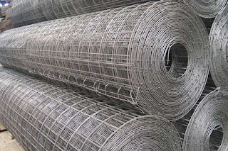
Wiremesh merupakan besi yang diproduksi dengan bantuan mesin las otomatis dimana ia menggabungkan besi lonjor hingga membentuk anyaman. Banyak orang yang menganggap wiremesh ini dengan sebutan besi anyam. Besi wiremesh bisa anda manfaatkan untuk berbagai kebutuhan, misalnya saja untuk kebutuhan konstruksi penguat dak beton, plat lantai, dan juga anak tangga. Jika anda hendak mengaplikasikan besi wiremesh, maka tentukan dulu kebutuhannya sehingga bisa menentukan jenis wiremesh mana yang cocok untuk diaplikasikan. Dan ketebalan besi 4 – 6 diaplikasikan untuk kebutuhan bangunan biasa. Besi wiremesh dengan kualitas bagus biasanya akan diproses dengan sistem las otomatis, sehingga susunan kawatnya rapi dan jaraknya teratur.
Distributor & Supplier Pagar BRC
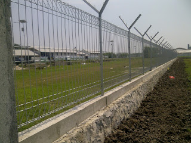
Pagar BRC dibuat dari besi beton berukuran diameter 5 mm – 8 mm sehingga tergolong kuat sebagai pagar pengaman. besi-besi berdiameter diatas digabungkan dengan bantuan mesin las wiremesh sehingga tersusun menjadi satu bagian rapi. Pagar BRC termasuk pada kategori pagar minimalis yang siap pakai. Untuk soal kekuatannya, pagar BRC dibuat dengan tegangan tinggi U55 grade yang memiliki tegangan ijin 2900kg/cm2 sehingga kekuatan yang ia miliki bahkan mencapai 2. Apalagi pagar BRC telah terlapisi dengan galvanis yang membuatnya tahan karat dan bertahan hingga 10 tahun ke atas, anda bisa aplikasikan pagar BRC ini di daerah korosif sekalipun. Pagar BRC memiliki daya tahan sampai > 10 tahun karena ia tergolong besi yang tahan karat karena sudah terlapisi dengan lapisan galvanis.
Distributor & Supplier Kawat Loket, Kawat Harmonika
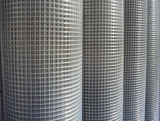
Untuk kebutuhan kawat penyekat, kawat pagar, maupun penutup jendela anda bisa manfaatkan jenis kawat loket harmonika karena strukturnya yang kuat dan membentuk seperti anyaman. Pemanfaatan kawat loket harmonika dalam kehidupan sehari-hari sangat banyak, selain untuk industri konstruksi banyak keperluan rumah yang memanfaatkan jenis kawat ini. Untuk kehidupan sehari-hari kawat harmonika banyak digunakan untuk keperluan rumahan, konstruksi, dan industri. Anda dapat memesan kawat loket harmonika yang terlapis dengan galvanis untuk kualitas terbaik yang tahan korosi. Anda dapat menghubungi kami untuk info pemesanan kawat harmonika tersebut, tersedia kawat harmonika dengan diameter 1,5 mm sampai 4 mm, lubangnya bisa mencapai 20mm sampai 70mm tergantung kebutuha anda. kami dapat memenuhi kebutuhan kawat loket harmonika anda dengan beragam ukuran, maksimal ukuran yang diterima adalah 3 meter.
Distributor & Supplier CNP & UNP
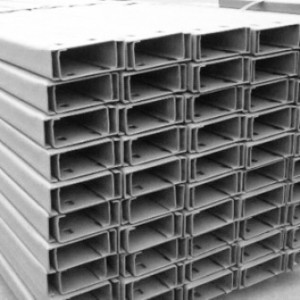
Besi UNP atau yang biasa disebut dengan besi kanal merupakan besi yang memiliki bentuk lengkung seperti huruf U dan biasanya diaplikasikan sebagai sambungan atau dudukan atap. Selain sebagai sambungan, besi kanal UNP ini juga cocok dimanfaatkan untuk keperluan girts dan penutup sebuah dinding. Dilihat secara sekilas, spesifikasi dari besi UNP hampir mirip dengan besi WF.
Distributor & Supplier Besi Siku
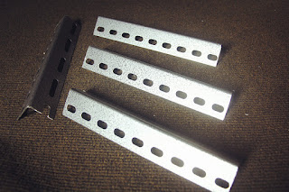
Setiap konstruksi bangunan pasti menggunakan material konstruksi besi siku ini untuk kebutuhan bagunan. Besi siku memiliki bentuk siku yang sudah didesain khusus sehingga kuat bila digunakan sebagai besi penyangga. Kedua sisi pada besi siku berbentuk tegak lurus dengan sudut yang berbeda, ada besi siku sama sisi, dlsb. Ukuran panjang dari besi siku yang kami sediakan adalah panjang 6 meter, dan ketebalan yang bisa anda sesuaikan dengan kebutuhan. Untuk info selengkapnya, anda dapat menghubungi kontak yang telah tersedia. Besi siku dapat anda manfaatkan untuk beragam kebutuhan konstruksi, bangunan, furnitur, dan lainnya. Butuh informasi lebih lengkap lagi? Kunjungi saja situs resmi kami di www.dis.or.id
Distributor & Supplier Hollow (Hitam, Galvanil, Galvanis)
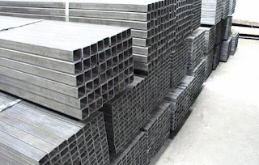
Dengan menggunakan material ini pembangunan konstruksi juga bisa selesai lebih cepat sehingga meminimalkan upah pekerja. Besi hollow bisa dimanfaatkan untuk berbagai keperluan, misalnya seperti pagar, pintu besi, teralis, dan masih banyak lagi. Jika anda tertarik memesan besi hollow ini maka tentukan dulu total kebutuhan anda, hubungi kami segera untuk info lebih lanjut!Selain sebagai pengganti material kayu, besi hollow yang kami jual dapat anda manfaatkan untuk kepentingan teralis, pintu besi, pagar, dan lain sebagainya.Bagi anda yang membutuhkan besi hollow, anda dapat menghubungi kami, besi hollow yang kami tawarkan cocok untuk kebutuhan pagar, pintu besi, teralis, dan lain sebagainya.Selain sebagai pengganti material kayu, besi hollow banyak dimanfaatkan untuk kebutuhan pintu besi dan teralis.
Distributor & Supplier Pipa Pancang
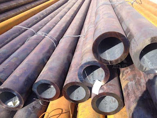
Produk pertama industri DIS adalah pipa pancang. Sebagai sebuah konstruksi bangunan, tentu saja hal yang satu ini tidak asing lagi. Terutama bagi Anda yang sedang membangun proyek di atas permukaan laut, tentu saja ini akan sangat membantu. Nah, pipa ini sendiri memiliki berbagai ukuran maupun spesifikasi lainnya. Termasuk juga di Industri DIS. Bukan hanya kualitas bahannya saja yang bagus tetapi juga untuk pembuatannya. Dengan begini, maka dalam penggunannya, pipa pancang juga bisa di aplikasikan secara maksimal.
Jasa Pondasi Bor (Strouss/Borepile)
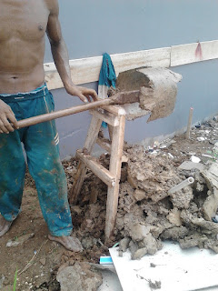
Kini untuk memasang pondasi rumah yang sesuai dengan hasil memuaskan, jangan khawatir karena Anda tidak perlu mengkhawatirkan nya lagi. Nah, jika Anda bingung terkait hal itu, kini ada banyak jasa yang bisa menjadi jalan keluar Anda dalam pelayanan pondasi bor. Sedangkan di mana Anda bisa mendapatkannya, jangan khawatir karena di sini Anda pun bisa memesan jasa tersebut. untuk masalah kualitas pun tidak perlu di pertanyakan lagi karena hasilnya akan sangat terjamin mengingat pelakunya adalah mereka yang sdah berpengalaman dan merupakan jasa profesional. Pelakunya pun merupakan orang-orang terlatih yang sadah profesional dan lebih berpengalaman. Jika mengenal pengeboran lebih jauh, sebenarnya ada dua jenis yakni manual dan otomatis dengan penggunaan mesin. Mengenal lebih jauh tentang pondasi bor, sebenarnya ada dua jenis pengeboran di sini, yakni pengeboran manual dan mesin. Untuk masalah kualitas hasilnya pun sama saja jadi tidak perlu khawatir. sedangkan dari segi kualitas pun keduanya tidak jauh berbeda.
Distributor & Supplier Genset (New/Second)
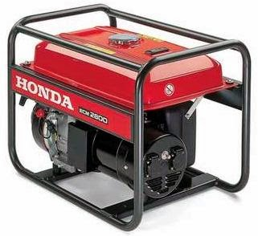
Genset atau generator set tentu saja juga sudah sangat familiar karena memang hingga kini banyak yang menggunakannya. genset ini merupaka produk yang menggunakan bahan bakar solar sehingga bisa menghasilkan tenaga listrik. Biasanya penjualan genset ini bisa berupa genset baru atau bekas. Nah, untuk pembelian keduanya, bisa Anda dapatkan pula di DIS.
Dalam hal ini perlu di ketahui bahwa harga genset memang cukup tinggi. Oleh karena itu tidak sedikit yang memilih membeli genset bekas. Meski demikian, masalah kualitas tidak perlu di khawatirkan karena sekalipun sudah bekas, tetap saja kondisinya tidak kalah dari genset yang baru. Kini ditributornya pun telah tersear di mana-mana sehingga lebih mudah.
Distributor & Supplier UPS
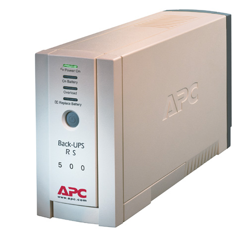
UPS saat ini sebenarnya telah banyak di gunakan. Terkecuali jika membicarakan dunia elektro. Sedangkan UPS sendiri merupakan sebuah alat elektronik yang mampu akan menjadi sumber listrik pengganti sementara jika sumber utamanya terputus. Terutama bagi para pengguna komputer yang tergantung terhadap enegi listrik. Sedangkan dari jenisnya sendiri, UPS memang sangatlah bervariasi. Sedangkan untuk memiliki UPS berkualitas, Anda bisa merujuk pada DIS.
Distributor & Supplier Forklift (Second)
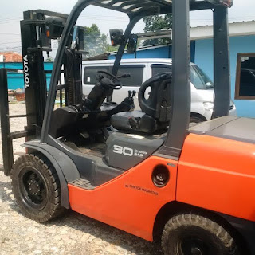
Mulai dari industri kecil, menengah hingga yang tergolong besar. Jika tidak ingin yang baru pun Anda bisa memilih forklif yang di jual bekas. sedangkan dari sisi kualitas barang yang di tawarkan di sini, jangan khawatir karena tentu saja akan sangat memuaskan. Nah, jika Anda sedang mencari bekas pun di DIS juga bisa di dapatkan. Nah, dengan kualitas yang bagus ini, maka forklif akan membuat aktivitas industri Anda menjadi lebih mudah dalam berbagai hal. Yang lebih menarik lagi, forklif cukup menguntungkan karena jika sudah tidak di gunakan lagi Anda bisa menjualnya kepada beberapa distributor yang tersedia di berbagai tempat.
Jasa Pembuatan Moulding Inject
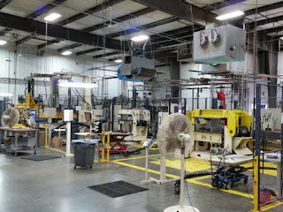
Bagi Anda yang sedang bingung membuat moulding inject, jangan khawatir karena disini pun tersedia penawaran jasa untuk membuatnya. bahkan kalau berbicara kualitas hasilnya di sini, bisa di pastikan akan sangat bermutu. Selain itu, masalah kualitas pun juga tidak kalah karena moulding inject yang di hasilkan memiliki kualitas terbaik. Selain itu dari segi kualitas pun juga merupakan moulding dengan kualitas yang tinggi. Anda tidak perlu khawatir terkait hal itu karena moulding inject yang di hasilkan pun juga merupakan kualitas yang terbaik. Jadi tinggal menyesuaikan saja dengan kebutuhan Anda sehingga pembuatannya bisa benar-benar pas.
Jasa Pembuatan Sparepart Mesin Produksi / Alat Berat
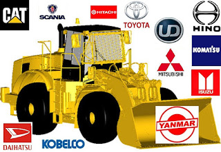
Alat berat, di dunia mesin tentu saja bukanlah barang atau produk yang asing. Apalagi mengingat bahwa sparepart ini sangat penting sehingga pembuatannya pun memerlukan perhatian yang tinggi. Oleh karena itu, Anda perlu memilih jasa terpercaya yang bisa di andalkan dalam pembuatan alat berat tersebut. Apalagi mengingat dukungan tenaga profesional yang di sediakan sehingga sparepart Anda akan lebih aman. Jika telah memilih jasa terpercaya, maka hasilnya pun akan terjamin dan semakin aman. Oleh karena itulah di butuhkan hasil berkualitas sehingga bisa bekerja secara maksimal. hal ini di sebabkan karena jika ada kesalahan, maka akibatnya akan fatal dan bisa membahayakan para pekerja yang menggunakannya.
Jasa Service Elektronik (Kompor Gas, Dispenser, Mesin Cuci)
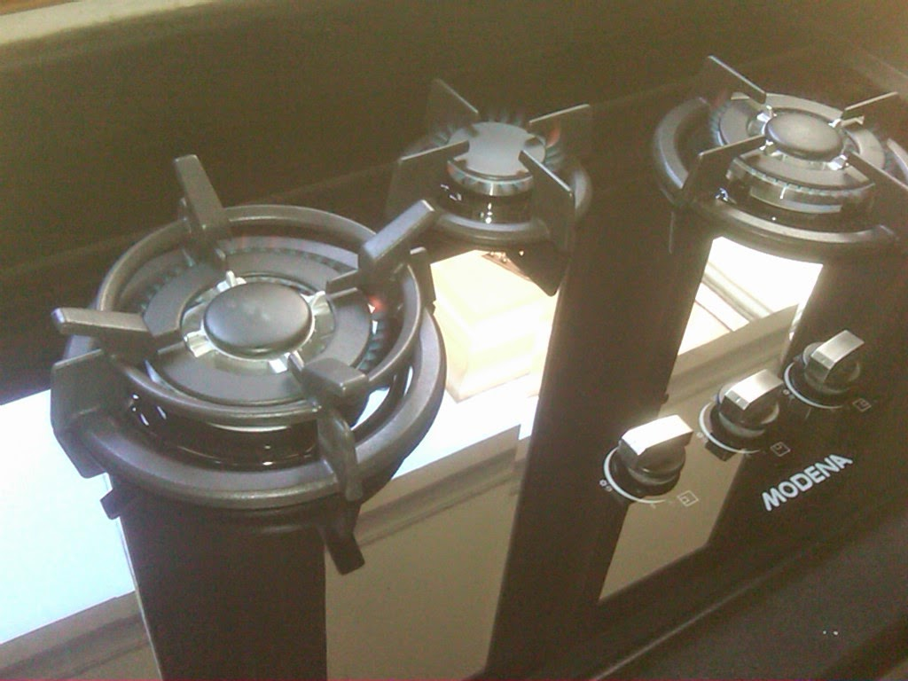
Ketika Anda memiliki beberapa alat elektornik yang rusak, apa salahnya jika berusaha memperbaikinya. mengimbangi akan hal itu, jasa service pun juga kian menyebar di mana-mana. sedangkan beberapa jasa ini melayani service seperti kompor gas, dispenser maupun mesin cuci. Sedangkan untuk masalah kualitas yang di tawarkan DIS, jangan khawatir karena tingkat keamanan dan perbaikannya sangat tinggi dna terjamin. Nah, kalau masalah servicenya sendiri sebenarnya Anda bisa juga melakukannya pada barang-barang yang harus di cek saja sekalipun tidak ada keluhan secara spesifik. Nah, apa pun barang yang perlu di perbaiki, kini akan kembali berfungsi seperti semula.
Komponen penting bagi bangunan salah satunya adalah atap, memang atap sudah tidak diragukan lagi manfaatnya pada sebuah bangunan. Tidak terbatas pada bangunan, beberapa jenis atap yang telah saya sebutkan diatas mampu dipakai bahkan tanpa bangunan sekalipun. Dari rumah paling kecil hingga bangunan termegah sekalipun pasti membutuhkan atap sebagai kebutuhan utamanya. Tak terkecuali berbagai jenis atap yang sudah saya jabarkan diatas. Tergantung dari kebutuhan, tentunya anda dapat memilih atap sesuai keinginan anda. Dengan senang hati, kami akan memberikan solusi untuk setiap kebutuhan dan keperluan anda.